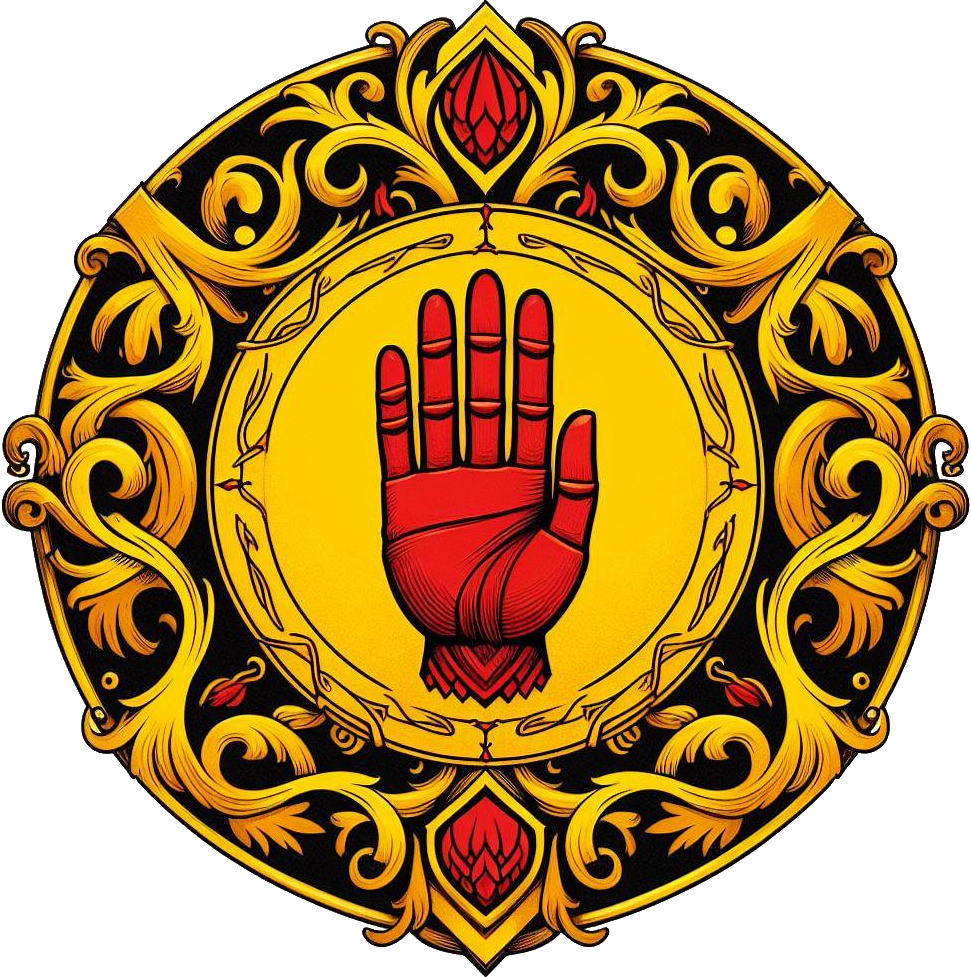

Albische Lande · Fürstentum
Uathneach
Drei Gliederungen.
Ein gemeinsames Fürstentum.
Namen, Banner und die Lehen von 26 Clans – auf drei Karten zum direkten Vergleichen.

26 Clans · Das Tiarnatum Uathneachs
Die Krieger der Clans
Cateran, Airig, Serf, Currach, Mormaer, Riada und Kampfbarden: Die Entwürfe verbinden albische Ausrüstung mit den Farben und Zeichen jedes Clans. Öffne eine Figur für Wappen, Klasse und Sitz der gewählten Kartenvariante.
Drei Möglichkeiten · alle nebeneinander besprechbar
Wie soll Uathneach gegliedert sein?
01 · Das Land & seine Clans
Wer sitzt wo?
Alle 26 Clanwappen · Linien führen zum jeweiligen Ort
02 · Zugehörigkeit & Rang
Die Lehen bleiben verschachtelt
Alle Kartenorte haben eine Clan-Zuordnung
Alle 18 benannten Kartenorte sind den 26 Clans zugeordnet.
03 · Namen & Wappen
Neue Clanwappen
04 · Zeichen & Herrschaften
Die sieben Regionsbanner
05 · Der gemeinsame Faden
Verwandt im Stil.
Eigenständig im Zeichen.
Alle Banner verwenden dieselbe Form: ein hängendes Tuch mit Holzquerstange, keltischem Flechtrand und spitzem Abschluss. Die Bildfläche ist quadratisch; das Banner darin behält seine vertraute Form.
Die vorhandenen Clanwappen stehen separat daneben. So bleiben das Zeichen einer Familie und das Zeichen ihrer Landschaft unterscheidbar. Die Kartenfarben wechseln zwischen den Dateien und bezeichnen keine festen Clanfarben.
Familienwappen markieren örtliche Lehen. Mehrere Familien am selben Ort stehen für unterschiedliche Lehen und Bannkreise; die genaue innere Aufteilung ist noch offen. Ein Wappen bedeutet deshalb keine alleinige Herrschaft über die ganze Stadt.
Namensgrundlagen und offene Punkte
Die Namen sind gälisch inspirierte albische Entwürfe, keine überlieferten Ogham-Inschriften. Ogham bezeichnet ein Schriftsystem. Grundlage: Heritage Ireland. Die Wortbedeutungen sind über die im jeweiligen Regionsfenster verlinkten Einträge von Teanglann nachvollziehbar.
Die sieben vollständigen Namensvorschläge wurden vor Erstellung im vorhandenen Projektbestand nicht gefunden. Neue Eingaben werden zusätzlich mit den vorhandenen strukturierten Seitentiteln verglichen. Das ist eine Entwurfsprüfung, keine Reservierung eines offiziellen Namens.
Dunnean und Orglen folgen deiner Schreibweise; Rinnmara folgt der neueren Angabe und der Kartenbeschriftung. Die Ausgangsvariante bewahrt deine Clan-Zuordnungen; Abweichungen der Alternativen stehen jeweils ausdrücklich dabei. Auf der Ausgangskarte wird Broch an Reithe als direktes Sonderlehen der Lága innerhalb der westlichen Kartenfläche behandelt.
Unbesetzte örtliche Lehen sind keine Freistädte und keine unabhängigen Gebiete. Die Vorschau begründet keine neue Clangeschichte und schreibt nichts in den Almanach.